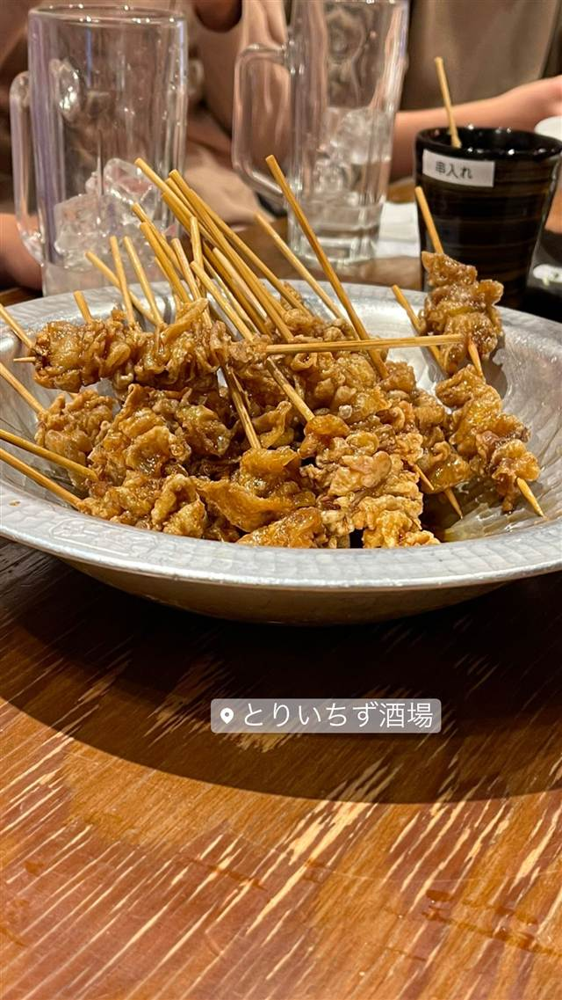

大衆居酒屋 とりいちず 川越クレアモール店
添加物なしで長時間炊いた白濁スープの水炊きが看板
とりいちず酒場
「とりいちず」は2013年、遠藤勇太氏が設立したFS.shakeが西新宿に開いた大衆とり酒場が始まり。添加物を使わず長時間炊いた白濁スープの水炊きが看板メニューで、全国に50店舗以上を展開している。
TRIVIA
へえ、という話
- 屋号「とりいちず」は漢字で書くと「酉一途」
- 創業時は運転資金わずか200万円からのスタートで半年間赤字だった
| 創業 | 1号店は2013年3月、東京・西新宿にオープン（運営会社「株式会社FS.shake」は同年1月設立） |
|---|---|
| 看板 | 水炊き、焼き鳥 |
| こだわり | 添加物を使わず、鶏ガラと水を大鍋でじっくり長時間炊いた濃厚白濁スープが特徴。 |
| 予算 | 夜 ¥2,000～¥2,999 |
| 場所 | 川越 埼玉県川越市 |
| 注意 | 全国に50店舗以上展開する大衆とり酒場チェーン。 |
食べたもの：串揚げ
NEARBY
近い店・同じ系統の店
-
 ★6
二郎系(直系) 川越
ラーメン二郎 川越店
埼玉に3軒だけの直系二郎、店主は横浜関内店出身
昼 ～¥999 夜 ～¥999
★6
二郎系(直系) 川越
ラーメン二郎 川越店
埼玉に3軒だけの直系二郎、店主は横浜関内店出身
昼 ～¥999 夜 ～¥999
-
 居酒屋 祐天寺駅
祐天寺 七味亭
自由が丘から移転、備長炭で焼き上げる串焼き居酒屋
夜 ¥5,000～¥5,999
居酒屋 祐天寺駅
祐天寺 七味亭
自由が丘から移転、備長炭で焼き上げる串焼き居酒屋
夜 ¥5,000～¥5,999
-
 居酒屋 神泉
恋文酒場かっぱ 松濤（旧店名 酒楼カタカムナ）
かつての恋文横丁にちなむ店名、丁寧な仕込みの創作和食
夜 ¥3,000～¥3,999
居酒屋 神泉
恋文酒場かっぱ 松濤（旧店名 酒楼カタカムナ）
かつての恋文横丁にちなむ店名、丁寧な仕込みの創作和食
夜 ¥3,000～¥3,999
-
 居酒屋 中目黒駅
おもや（めしさけ おもや）
実家食堂の屋号を継いだ店名、大鍋でじっくり煮込むもつ煮
夜 ¥5,000～¥5,999
居酒屋 中目黒駅
おもや（めしさけ おもや）
実家食堂の屋号を継いだ店名、大鍋でじっくり煮込むもつ煮
夜 ¥5,000～¥5,999
-
 居酒屋 大崎広小路
酒場それがし
添加物を使わない純米酒だけを扱う日本酒専門の酒場
夜 ¥4,000～¥4,999
居酒屋 大崎広小路
酒場それがし
添加物を使わない純米酒だけを扱う日本酒専門の酒場
夜 ¥4,000～¥4,999
-
 居酒屋 神泉
ひしゅうや
いわしから自家製する宮崎名物「おび天」と炭火焼き地鶏
夜 ¥4,000～¥4,999
居酒屋 神泉
ひしゅうや
いわしから自家製する宮崎名物「おび天」と炭火焼き地鶏
夜 ¥4,000～¥4,999